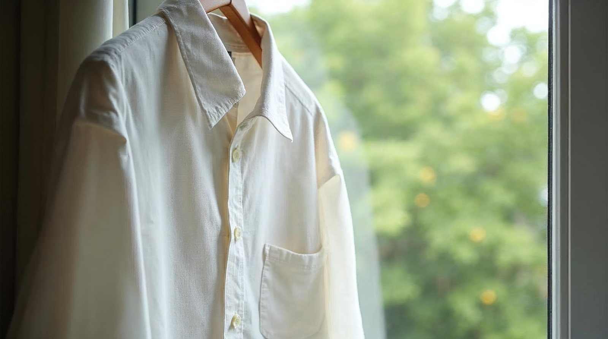
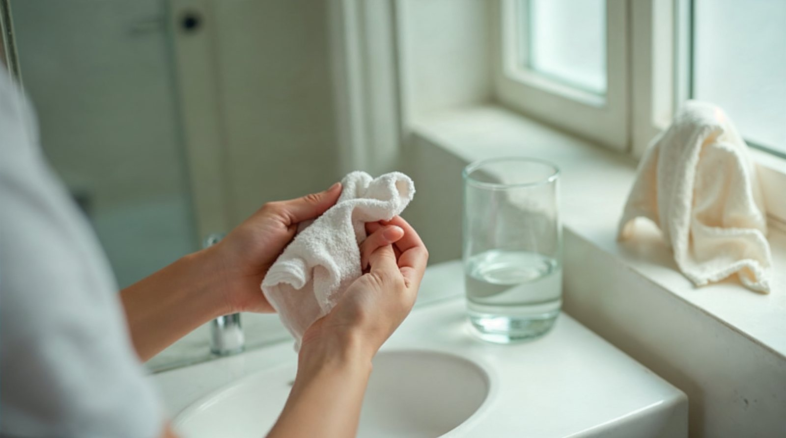
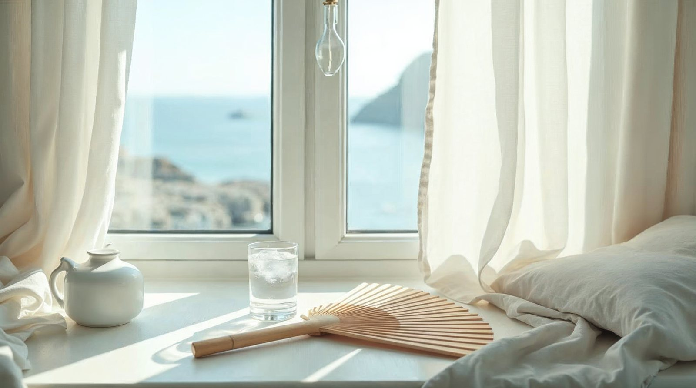
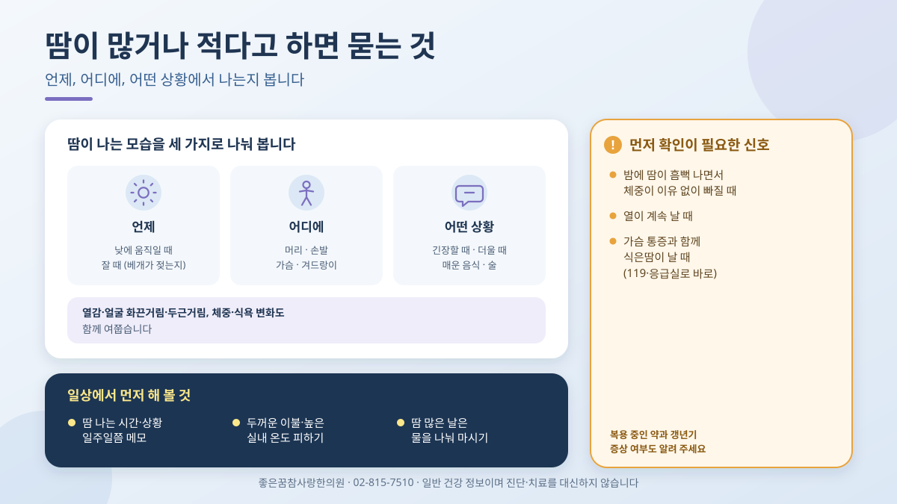

이종호 한의사 감수좋은꿈참사랑한의원 대표원장 (한의사 면허번호 19769)발행 2026-11-23 · 수정 2026-11-26
이 글의 차례
- 왜 이런 불편이 생길 수 있나요
- 땀이 나는 모습은 어떻게 나눠서 살피나요?
- 왜 땀이 나는 모습을 몸 상태의 단서로 볼까요?
- 먼저 이렇게 여쭙니다
- 땀과 비슷하게 느껴지는 다른 불편은 어떻게 나눠 보나요?
- 땀이 적어서 불편한 경우도 있나요?
- 일상에서 먼저 해 볼 수 있는 것
- 땀이 많은 날 생활에서 챙길 것
- 손바닥과 발바닥에 땀이 많다면?
- 밤에 땀이 나서 깬다면 잠자리부터 살펴볼까요?
- 상황별 예시
- 스스로 점검해 보세요
- 한의원에서 함께 살필 수 있는 경우
- 계절과 나이에 따라 땀은 어떻게 달라질 수 있나요?
- 땀이 많을 때 식사는 어떻게 하면 좋을까요?
- 첫 방문은 이렇게 진행됩니다
- 땀이 달라지는지는 무엇으로 가늠하나요?
- 얼마나 지켜보고 언제 상담할까요?
- 이렇게 기록해 오시면 상담이 쉬워집니다
- 이런 증상은 먼저 확인이 필요합니다
땀이 많거나 적다고 하시면 땀이 언제, 어디에, 어떤 상황에서 나는지와 함께 잠, 열감, 긴장 정도를 묻습니다. 땀이 나는 모습은 몸 상태를 이해하는 단서가 되기 때문입니다. '조금만 움직여도 땀이 줄줄 나요', '자고 나면 베개가 젖어요', '땀이 거의 안 나요'처럼 땀 이야기는 사람마다 다양합니다.
땀 때문에 진료를 받아도 되는지 망설이다 다른 불편으로 오셨다가 '사실은 땀이 제일 신경 쓰여요'라고 털어놓는 분도 계십니다. 땀은 생활의 불편이 크면서도 말하기 쑥스러운 이야기라, 편하게 꺼내실 수 있도록 제가 먼저 여쭙는 편입니다. 다른 불편으로 오셨더라도 땀 이야기를 함께 해 주시면 몸 상태를 이해하는 데 보탬이 됩니다.
왜 이런 불편이 생길 수 있나요
- 땀은 체온을 조절하는 길이라, 더위나 운동, 매운 음식, 술에 따라 자연스럽게 늘어납니다.
- 긴장하면 손바닥, 발바닥, 겨드랑이에 땀이 나는 분들이 많습니다.
- 갱년기에는 얼굴과 가슴이 화끈거리며 땀이 나는 경우가 있습니다.
- 갑상선 기능 변화, 감염, 일부 약처럼 다른 원인이 있는 경우도 있어 구분이 필요합니다. 한의학에서는 땀이 나는 시간과 부위를 몸 상태의 단서로 함께 봅니다.
땀이 나는 모습은 어떻게 나눠서 살피나요?
'땀이 많다'는 한마디도 나눠서 들으면 전혀 다른 이야기가 됩니다. 저는 보통 다섯 가지를 차례로 여쭙니다.
- 언제: 낮에 움직일 때인지, 가만히 있어도 나는지, 잠든 사이에 나는지
- 어디에: 머리와 얼굴, 손바닥과 발바닥, 겨드랑이, 가슴과 등 가운데 어디에 몰리는지
- 어떤 상황에서: 더울 때, 긴장할 때, 밥을 먹을 때, 매운 음식이나 술을 먹은 뒤
- 얼마나: 살짝 촉촉한 정도인지, 줄줄 흐르는지, 옷을 갈아입어야 할 만큼인지
- 땀이 난 뒤: 개운한지, 오히려 기운이 빠지고 으슬으슬한지
마지막 질문은 의외로 중요한 단서가 됩니다. 땀을 흘리고 나서 개운한 분과 땀을 흘린 뒤 금세 지치고 추워지는 분은 같은 땀이라도 몸 상태를 다르게 보게 됩니다.
왜 땀이 나는 모습을 몸 상태의 단서로 볼까요?
땀은 체온을 맞추는 일과 긴장을 다루는 일, 두 가지와 이어져 있습니다. 몸에 열이 많이 쌓이면 식히려고 땀이 나고, 마음이 긴장하면 신경이 손바닥과 발바닥의 땀샘을 깨웁니다.
한의학에서는 오래전부터 조금만 움직여도 나는 낮의 땀과, 잠든 사이 났다가 깨면 멎는 밤의 땀을 나눠서 보았습니다.
그래서 땀이 언제 나는지와 함께 피로, 열감, 잠, 소화 이야기를 나란히 놓고 보면 몸 전체의 흐름을 이해하는 데 도움이 됩니다. 같은 밤땀이라도 덥고 답답해서 나는지, 피곤이 쌓여 기운이 없는 가운데 나는지에 따라 함께 살필 생활이 달라집니다.

먼저 이렇게 여쭙니다
- 낮에 움직일 때와 잘 때 중 언제 땀이 나나요?
- 머리, 손발, 가슴 등 어느 부위에 땀이 많나요?
- 긴장할 때 땀이 더 나나요?
- 열감, 얼굴 화끈거림, 두근거림이 함께 있나요?
- 최근 체중이나 식욕에 변화가 있나요?
땀과 비슷하게 느껴지는 다른 불편은 어떻게 나눠 보나요?
땀 이야기를 들어 보면 땀 자체보다 함께 오는 느낌이 더 불편한 경우가 있습니다. 비슷해 보여도 살필 방향이 달라 나눠서 여쭙니다.
- 땀은 별로 없는데 얼굴과 몸이 화끈 달아오르기만 한다면, 땀보다 열감이 오는 때와 잠, 긴장을 중심으로 봅니다.
- 끼니를 거른 뒤 식은땀이 나며 손이 떨리고 기운이 빠진다면, 식사 간격과 드시는 약을 먼저 여쭙니다.
- 커피를 여러 잔 마신 날 두근거리며 땀이 난다면, 하루 커피 양을 줄여 보며 달라지는지 살펴봅니다.
- 땀을 흘린 뒤 으슬으슬 춥고 몸살 기운이 있다면, 감기처럼 지나가는 일인지 며칠 지켜보며 열이 나는지 확인합니다.
이렇게 나눠 보면 집에서 먼저 바꿔 볼 것도 분명해집니다. 어느 쪽에 가까운지 헷갈리면 땀이 난 순간의 상황을 그대로 적어 오시면 함께 나눠 봅니다. 식사 간격을 고르게 하거나 커피를 줄이는 것만으로 땀이 함께 줄어드는 경우도 있습니다.
땀이 적어서 불편한 경우도 있나요?
땀이 많은 것만 불편한 것은 아닙니다. 운동을 해도 땀은 거의 안 나고 얼굴만 벌겋게 달아오른다거나, 여름에 남들보다 더위를 훨씬 못 견딘다는 분도 계십니다.
- 더운 날 몸에 열이 갇힌 듯 답답하고 머리가 무거운지
- 피부가 유난히 건조하고 가려운지
- 물을 하루에 얼마나 드시는지, 소변 색이 진하지 않은지
땀이 적은 분은 더위에 오래 있지 않도록 하고, 물을 조금씩 자주 마시며, 미지근한 물로 샤워해 몸의 열을 내려 주는 것이 도움이 될 수 있습니다. 갑자기 땀이 줄었다면 드시는 약이나 피부 상태도 함께 살펴봅니다.

일상에서 먼저 해 볼 수 있는 것
- 땀이 나는 시간과 상황을 일주일 정도 메모하기
- 잘 때 너무 두꺼운 이불과 높은 실내 온도 피하기
- 땀을 많이 흘린 날은 물을 자주 나눠 마시기
- 매운 음식과 술이 땀에 주는 영향 살펴보기
땀이 많은 날 생활에서 챙길 것
- 땀을 잘 흡수하고 빨리 마르는 옷을 입고, 갈아입을 속옷이나 셔츠를 하나 챙기기
- 손바닥에 땀이 많다면 손수건을 늘 가까이 두고, 필기할 때는 손 아래에 얇은 천을 받치기
- 땀을 많이 흘린 날은 물을 나눠 마시고, 땀이 식으며 몸이 차가워지지 않게 바로 닦기
- 잠자리는 너무 덥지 않게, 이불은 땀을 잘 흡수하는 얇은 것으로 바꿔 보기
- 뜨거운 국물, 매운 음식, 술이 땀을 얼마나 늘리는지 일주일쯤 살펴보기
땀이 신경 쓰여 악수를 피하거나 밝은 색 옷을 못 입고, 사람을 만나는 일까지 피하게 되었다면 그 마음도 함께 들려주세요. 땀의 양만큼이나 생활이 얼마나 불편한지가 진료 방향을 정하는 데 중요합니다.
손바닥과 발바닥에 땀이 많다면?
손발바닥 땀은 긴장과 가까이 이어져 있어, 땀을 신경 쓸수록 더 긴장하고 땀이 더 나는 고리에 빠지기 쉽습니다. 땀을 없애려 애쓰기보다 그 고리를 느슨하게 하는 데서 시작해 보세요. '또 땀이 나면 어떡하지' 하는 걱정이 줄어드는 것만으로도 땀이 덜 신경 쓰인다는 분이 많습니다.
- 중요한 일을 앞두고 숨을 넷 세며 들이쉬고 여섯 세며 내쉬기를 다섯 번쯤 하기
- 손을 너무 자주 씻어 피부가 거칠어지지 않게 하고, 씻은 뒤에는 바로 말리기
- 발에 땀이 많다면 땀을 잘 흡수하는 면 양말을 신고, 신발은 하루씩 번갈아 신어 안을 말리기
- 땀이 난 순간을 기록할 때 그 직전에 무슨 생각을 하고 있었는지도 짧게 적어 보기
밤에 땀이 나서 깬다면 잠자리부터 살펴볼까요?
잠자는 동안 땀이 난다고 오시는 분 가운데에는 방이 덥거나 이불이 두꺼운 경우가 생각보다 많습니다. 먼저 잠자리 환경을 바꿔 보고, 그래도 이어지는지 살펴보시길 권합니다.
- 침실 온도를 조금 낮추고, 두꺼운 이불 하나보다 얇은 이불 두 장으로 덮었다 걷었다 하기
- 잠옷과 침구는 땀을 잘 흡수하는 면 소재로 바꿔 보기
- 잠들기 두세 시간 전에는 술과 맵고 뜨거운 음식을 줄이기
- 땀이 나서 깬 날은 몇 시였는지, 어디가 젖었는지 아침에 한 줄 적어 두기
환경을 바꾼 뒤에도 비슷하다면 잠의 깊이와 열감, 피로를 함께 살펴볼 때입니다. 함께 자는 가족이 있다면 같은 방에서 가족은 덥지 않았는지도 물어봐 주세요. 방이 더운 탓인지 몸의 열감 탓인지 가늠하는 데 도움이 됩니다.
상황별 예시
- 예를 들어 점심을 먹을 때마다 머리와 얼굴에서 땀이 줄줄 흘러 식사 자리가 불편한 직장인이라면, 어떤 음식에서 특히 심한지, 식사 속도와 양은 어떤지, 소화와 열감은 어떤지를 함께 여쭙습니다.
- 예를 들어 발표나 시험을 앞두면 손바닥이 흥건해져 종이가 젖는 학생이라면, 긴장이 시작되는 순간과 땀의 양을 함께 봅니다. 숨을 길게 내쉬는 연습과 잠, 하루 일정도 함께 이야기합니다.
- 예를 들어 갱년기 무렵 얼굴과 가슴이 갑자기 화끈 달아오르며 땀이 나고 밤에도 몇 번씩 깨는 경우라면, 생리 변화와 잠, 열감이 오는 시간대를 함께 살핍니다.
스스로 점검해 보세요
- 조금만 움직여도 땀이 나고, 땀을 흘린 뒤 기운이 빠진다.
- 잠든 사이 땀이 났다가 깨면 멎는다.
- 긴장하면 손바닥이나 발바닥이 금세 축축해진다.
- 식사할 때 머리나 얼굴에 땀이 많이 난다.
- 얼굴과 가슴이 갑자기 화끈거리며 땀이 난다.
- 더위를 유난히 못 견디는데 땀은 잘 나지 않는다.
- 땀 때문에 옷 색이나 사람 만나는 일을 고민한 적이 있다.
해당하는 항목을 진료 때 알려 주시면 땀 이야기를 시작하기가 훨씬 쉬워집니다.

한의원에서 함께 살필 수 있는 경우
- 땀이 나는 모습을 진맥, 설진과 함께 몸 상태의 단서로 살핍니다.
- 잠자는 동안 땀이 많은 경우 잠의 모양과 열감을 함께 살핍니다.
- 갑상선이나 다른 원인 확인이 필요하다고 판단되면 다른 의료기관을 안내합니다.
좋은꿈참사랑한의원에서는 먼저 땀이 나는 상황과 함께 따라오는 불편을 충분히 듣고, 진맥과 설진, 필요하면 복진으로 단서를 모아 몸 상태를 이해합니다. 그 결과에 따라 침, 한약 상담, 생활 리듬 조정 가운데 상태에 맞는 방법을 정하고, 검사가 먼저 필요하다고 판단되면 다른 의료기관을 안내합니다. 귀가 전에는 일주일 동안 적어 볼 항목을 알려 드립니다.
계절과 나이에 따라 땀은 어떻게 달라질 수 있나요?
장마철처럼 습도가 높은 날에는 땀이 잘 마르지 않아 같은 양이라도 훨씬 많게 느껴집니다. 겨울에는 난방이 센 실내에서 두꺼운 옷을 입은 채 오래 있다 보면 등과 가슴에 땀이 차기도 합니다. 계절에 따라 땀이 어떻게 달라지는지 함께 알려 주시면 도움이 됩니다.
아이는 잠들 무렵 머리와 목에 땀이 나는 경우가 흔한 편이라, 잘 먹고 잘 놀고 잘 자는지를 먼저 여쭙니다.
갱년기 무렵에는 화끈거림과 함께 땀이 나는 일이 잦아질 수 있어 생리 변화와 잠을 함께 살핍니다. 연세가 드시면 땀이 줄어 더위를 덜 느끼시는 경우도 있어, 여름에는 물과 실내 온도를 가족이 함께 챙겨 드리시면 좋습니다. 어르신은 목마름을 늦게 느끼시는 경우가 있어, 시간을 정해 물을 드시도록 권해 드리는 것도 방법입니다.
땀이 많을 때 식사는 어떻게 하면 좋을까요?
- 맵고 뜨거운 음식은 한 번에 몰아 먹기보다 양을 줄여 보기
- 식사를 너무 빨리 하지 않고, 국물은 조금 식혀서 먹기
- 술은 땀과 열감을 늘리는 경우가 많아, 마신 날과 땀이 많았던 날을 나란히 적어 보기
- 땀을 많이 흘린 날은 끼니를 거르지 말고 물과 함께 챙기기
음식을 바꿔 보는 것은 일주일 정도 한 가지씩 해 보는 편이 좋습니다. 여러 가지를 한꺼번에 바꾸면 무엇이 도움이 되었는지 알기 어렵기 때문입니다. 바꿔 본 음식과 그 주의 땀 기록을 함께 가져오시면 진료 때 이야기가 훨씬 구체적이 됩니다.
첫 방문은 이렇게 진행됩니다
- 이야기 듣기: 땀이 나는 시간과 부위, 상황, 양, 땀이 난 뒤의 느낌, 그리고 잠과 열감, 소화, 긴장을 먼저 충분히 듣습니다.
- 맥 짚기: 모든 분께 맥부터 짚어 몸 전체 상태를 살핍니다.
- 혀와 피부 살피기: 혀의 색과 설태, 촉촉한 정도를 보고, 필요하면 손바닥과 이마의 땀 상태도 함께 봅니다.
- 필요하면 복진: 소화 불편이나 아랫배 불편이 함께 있으면 배를 살핍니다.
- 방향 정하기: 모은 단서를 바탕으로 생활 리듬 조정과 함께 침, 한약 상담 가운데 상태에 맞는 방법을 정합니다. 한약은 드시는 약을 먼저 확인한 뒤 이야기하고, 임신 중이거나 계획 중이시면 미리 알려 주세요.
땀이 달라지는지는 무엇으로 가늠하나요?
땀의 양은 그날 날씨와 기분에 따라 오르내려서 느낌만으로 비교하기 어렵습니다. 그래서 저는 숫자로 셀 수 있는 것을 기준으로 삼아 보자고 말씀드립니다.
- 하루에 옷이나 속옷을 갈아입은 횟수
- 손수건으로 손을 닦은 횟수, 또는 시험지나 서류가 젖은 일
- 밤에 땀 때문에 깬 횟수
- 땀 때문에 미루거나 피한 약속과 일
이런 기준을 처음 오셨을 때 함께 정해 두면, 다음에 오셨을 때 그사이 어떠셨는지 같은 잣대로 이야기할 수 있습니다. 땀이 크게 줄지 않았더라도 땀 때문에 피하던 일을 다시 할 수 있게 되었다면, 그것도 중요한 변화로 함께 적어 둡니다.
얼마나 지켜보고 언제 상담할까요?
- 더위와 운동, 매운 음식처럼 이유가 분명한 땀은 생활을 조절하며 지켜볼 수 있습니다.
- 이유 없이 땀이 늘어난 상태가 몇 주 이어지거나, 땀 때문에 잠을 설치고 일상이 불편하다면 미루지 말고 상담을 받아 보세요.
- 땀과 함께 두근거림이나 손 떨림, 더위를 못 견디는 느낌이 새로 생겼다면 갑상선 검사를 먼저 받아 보시도록 권하기도 합니다.
이렇게 기록해 오시면 상담이 쉬워집니다
- 땀이 나는 시간대와 부위, 그때의 상황
- 잘 때 땀으로 옷이나 베개를 갈아입은 날
- 열감, 두근거림, 체중 변화가 있었는지
- 복용 중인 약과 갱년기 증상 여부
기록은 길 필요가 없습니다. '오전 10시 회의 직전, 손바닥, 많이', '새벽 3시, 목과 가슴, 잠옷 젖음'처럼 시간과 부위, 양을 짧게 적고, 그날 먹은 음식과 술, 잠든 시각을 한 줄 붙여 보세요. 일주일만 모여도 땀이 어떤 날, 어떤 시간에 몰리는지 흐름이 보이고, 진료실에서 함께 살필 때 기억에 기대지 않아도 됩니다.
이런 증상은 먼저 확인이 필요합니다
- 밤에 옷이나 베개가 흠뻑 젖을 만큼 땀이 나는 날이 이어지는 경우
- 체중이 이유 없이 빠지거나 열이 계속 나는 경우
이런 신호가 있으면 한의원보다 가까운 병원이나 응급실을 먼저 찾으세요.

여쭙는 것
- 낮에 움직일 때와 잘 때 중 언제 땀이 나나요?
- 머리, 손발, 가슴 등 어느 부위에 땀이 많나요?
- 긴장할 때 땀이 더 나나요?
생활에서 해 볼 것
- 땀이 나는 시간과 상황을 일주일 정도 메모하기
- 잘 때 너무 두꺼운 이불과 높은 실내 온도 피하기
- 땀을 많이 흘린 날은 물을 자주 나눠 마시기
한의원에서 함께 살필 것
- 땀이 나는 모습을 진맥, 설진과 함께 몸 상태의 단서로 살핍니다.
- 잠자는 동안 땀이 많은 경우 잠의 모양과 열감을 함께 살핍니다.
- 갑상선이나 다른 원인 확인이 필요하다고 판단되면 다른 의료기관을 안내합니다.
먼저 확인이 필요한 신호
- 밤에 옷이나 베개가 흠뻑 젖을 만큼 땀이 나는 날이 이어지는 경우
- 체중이 이유 없이 빠지거나 열이 계속 나는 경우
한눈에 보는 표
| 구분 | 핵심 |
|---|---|
| 여쭙는 것 | 낮에 움직일 때와 잘 때 중 언제 땀이 나나요? 머리, 손발, 가슴 등 어느 부위에 땀이 많나요? |
| 생활에서 해 볼 것 | 땀이 나는 시간과 상황을 일주일 정도 메모하기 잘 때 너무 두꺼운 이불과 높은 실내 온도 피하기 |
| 한의원에서 함께 살필 것 | 땀이 나는 모습을 진맥, 설진과 함께 몸 상태의 단서로 살핍니다. 잠자는 동안 땀이 많은 경우 잠의 모양과 열감을 함께 살핍니다. |
| 먼저 확인이 필요한 신호 | 밤에 옷이나 베개가 흠뻑 젖을 만큼 땀이 나는 날이 이어지는 경우 체중이 이유 없이 빠지거나 열이 계속 나는 경우 |
자주 묻는 질문
갱년기 땀과 다른가요?
나이와 생리 변화, 열감의 모습을 함께 살펴 이야기합니다.
땀이 안 나는 것도 문제인가요?
더위를 유난히 못 견디거나 다른 불편이 있으면 함께 살펴봅니다.
손에만 땀이 많아 시험지가 젖는데 상담할 수 있나요?
네. 땀이 나는 상황과 긴장 정도를 함께 살피며 생활에서 해 볼 수 있는 것부터 이야기합니다.
땀이 날 때 물을 많이 마시면 땀이 더 나지 않나요?
물을 줄인다고 땀이 줄지는 않고, 오히려 몸이 지치기 쉽습니다. 한 번에 많이 마시기보다 조금씩 자주 나눠 드시길 권합니다.
진료 시간은 어떻게 되나요?
좋은꿈참사랑한의원은 평일 09:30~20:00(점심 13:00~14:00), 토·일·공휴일 09:30~15:00에 진료합니다.
좋은꿈참사랑한의원은 재진 때 지난번 이야기부터 이어서 여쭙니다. 진료시간과 예약은 오시는 길에서 확인하세요.
어디서 상담받을 수 있나요?
좋은꿈참사랑한의원은 서울 동작구 만양로2길 2 신성빌딩 3층·5층(서울 동작구 상도동, 7호선 상도역 3번 출구 근처)에 있습니다. 한의사 3명(이종호 대표원장, 조영기 수석진료원장, 정원영 진료원장)이 진료합니다. 진료시간은 평일 09:30~20:00(점심 13:00~14:00), 토·일·공휴일 09:30~15:00이며, 방문 전 전화로 확인을 권합니다. 예약은 네이버 예약, 카카오톡 상담, 전화 02-815-7510로 받습니다.
이 글은 일반적인 건강 정보이며 개인의 진단이나 치료를 대신하지 않습니다. 증상이 있거나 복용 중인 약이 있다면 진료를 통해 확인하세요. 치료 효과는 개인마다 다를 수 있습니다.
작성 기준: 일반적으로 알려져 있는 건강 정보를 참고해 정리했습니다(대표원장 감수). 증상 기록은 1~2주 동안 하루 1회, 비슷한 시간에 적어 오시면 지난 상태와 비교하기 쉽습니다.